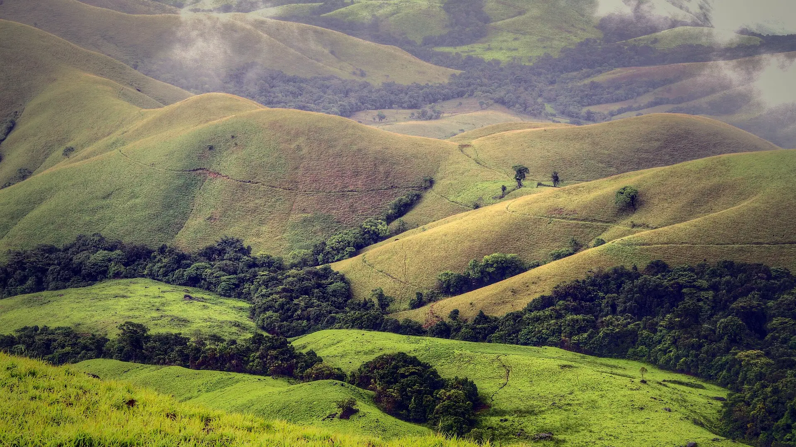

02Day 2 · Mullodi forest officekm 0.1
Into the national park
9amStart · With a local guide
After the overnight bus from Bangalore, the walk starts at the forest office above Mullodi, near the Somavathi falls.

Photo: Dhruvaraj S from India, CC BY 2.0ಕುದುರೆಮುಖ · Chikmagalur, Western Ghats
The trek in one line, and what you can do with it.
One long day there and back, inside Kudremukh National Park.
4 stops on the map, then the climb. Scroll the stops and the map follows.
02Day 2 · Mullodi forest officekm 0.1
9amStart · With a local guide
After the overnight bus from Bangalore, the walk starts at the forest office above Mullodi, near the Somavathi falls.
02Day 2 · Ontimarakm 4.3
~4.4kmHalfway · On the mapped trail
Out of the shola forest and into open grassland. Past the ruin of Lobo's House stands Ontimara, the lone tree that marks halfway.
02Day 2 · Kudremukh · 1,892 mkm 8.2
+780mClimb · From the forest office
A last climb past a spring to the top of Kudremukh, 1,892 m. The name means "horse-faced" in Kannada, for one side of the mountain.
02Day 2 · Mullodikm 16.4
~6pmBack by · Past the checkpost by 5:30
Down the same way to the forest office. Everyone must be back past the checkpost by 5:30 pm.
Best in Jun–Aug, Nov–Feb.
Dark: the months the trek’s sources call its best. Mid: possible. See all treks in June.
Base prices from 6 operators’ own pages, per person. GST and travel are often extra. Treqz sells nothing.
The practical things, then the questions people ask.
Take an overnight bus from Bangalore towards Horanadu and get off at Kalasa. It costs about ₹800. The trek start is about 10 km from the Kalasa bus stand.
Bikat Adventures DIY guideBSNL works in Kudremukh town. There is no signal inside the forest.
Bikat AdventuresThere are no food stalls on the trail. Mullodi homestays give breakfast and a packed lunch. Packets of chips, biscuits and chocolates are not allowed in the park.
Bikat Adventures DIY guideAbout three homestays in Mullodi take trekkers. They have separate dorms for men and women and shared bathrooms. You sleep on thin foam sheets, so bring a blanket or sleeping bag.
Muddie TrailsA local guide is assigned when you arrive. You don't need to book one ahead.
Bikat Adventures DIY guideAbout 16.5 km of walking over 3 days on the trail.
The highest point is 1,892 m, about 770 m above the start.
Its sources grade it Moderate.
Jun–Aug, Nov–Feb.
₹3,099 to ₹4,839 per person: base prices from 6 operators' own pages. GST and travel are often extra.
BSNL works in Kudremukh town. There is no signal inside the forest.